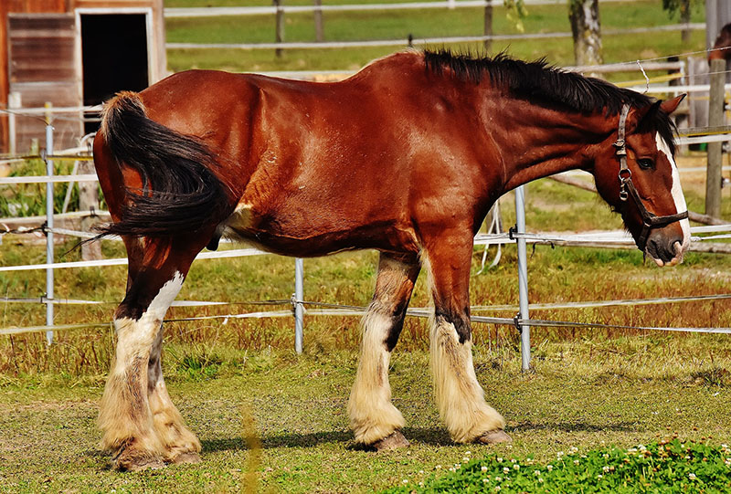

image
A grey ground until the image is there, a fade-in where you ask for one,
and no broken-image icon when it fails. Loading, sizes and formats stay the
browser's: everything below is plain <img> and
<picture>.
Framed and not
In a data-pg-image-frame the grey sits on the frame and the
image stays hidden until it has fully loaded, then shows whole — not drawn
top to bottom as it arrives. Without one the grey sits on the image itself,
under it as it arrives. A failed one keeps its box and its grey; the address
it tried is in data-pg-image-src.


Fade, where asked for
No fade unless the image asks: a framed image shows at once when loaded,
as YouTube's thumbnails do. A bare data-pg-image-fade fades
it in over the page's --pg-image-fade — 400ms unless set;
with a value it is that image's own, in milliseconds.
data-pg-image-fade · 400msdata-pg-image-fade="1200" · slowAdded later
One listener on document sees every image — also the ones a
script puts on the page afterwards. There is nothing to call again.
srcset — the right size for the screen
Three files, 500, 1000 and 1500 pixels wide; the number is printed on
each. sizes says how wide the image is drawn, and the browser
picks the smallest file that is sharp enough for that width and the
screen's pixel density. Narrow the window, or open it on a phone, and
reload.
<picture> — a different image per screen
Wide screens get the city, middling ones the snake, phones the dinosaur.
When the shape changes with the screen, give each
<source> its own width and
height too, or the page jumps as the image arrives. The image
attributes go on the <img>.
A <source> that fails: the browser does not fall back to
the <img>'s own src, so image clears the
sources and the grey stays, as with a plain image.

Lazy loading — the browser's own
loading="lazy" waits until an image is near the screen. In a
sideways slider the far ones wait until scrolled near — the browser looks
well ahead, so on a wide screen most load at once.
Inside something closed it waits until that opens — the old "click to load", with no script.
Open to load the image

And far down the page, it waits for the scroll. An image hidden with
display: none — say, on wide screens only — is not fetched at
all while hidden.
Below the fold
Also
- Without JavaScript nothing is hidden: images show as they arrive, with no fade.
- With reduced motion asked for, framed images appear without fading.
- Smooth-scrolling libraries that move the real page (Lenis) work as they are: lazy loading follows the real scroll position.